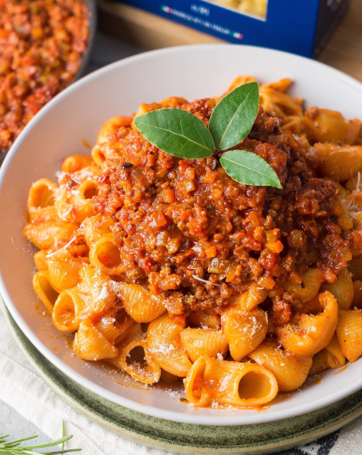

🍝 Паста Болоньезини
📋 Ингредиенты
- Спагетти — 200 г
- Фарш мясной (говяжий) — 150 г
- Лук репчатый — 1 шт. (≈150 г)
- Масло растительное — 2 ст. л.
- Чеснок — 3–4 зубчика (≈60 г)
- Вино красное сухое — 50 мл
- Томат-паста — 1 ст. л. (≈20 г)
- Вода — 2 ст. л.
- Масло сливочное — 30 г (для подачи)
- Соль, перец, лавровый лист
- Зелень (укроп, зелёный лук) — небольшой пучок
👩🍳 Приготовление
- Лук нарезать мелкими кубиками. Чеснок нарезать слайсами (половину отправить к луку, вторую половину оставить для финала).
- На разогретую сковороду влить растительное масло, обжарить лук до золотистости (2–3 минуты). Добавить половину чеснока, пассеровать 30 секунд.
- Добавить мясной фарш, разбивая лопаткой комочки. Обжаривать 4 минуты до изменения цвета.
- Влить красное сухое вино, дать выпариться алкоголю (1–2 минуты).
- Добавить томат-пасту, перемешать, убавить огонь. Влить 2 ст. ложки воды, тушить 10 минут под крышкой.
- Посолить, поперчить, добавить лавровый лист. В самом конце выключить огонь, вмешать оставшийся чеснок и мелко нарезанную зелень.
- Отварить спагетти согласно инструкции на упаковке до состояния al dente. Откинуть на дуршлаг, сохранив немного воды от варки.
- На дно тарелки выложить кусочек сливочного масла, на него — спагетти, свёрнутые гнездом (с помощью вилки).
- Поверх спагетти выложить горячий соус болоньезе. При желании посыпать тёртым пармезаном.
Всем приятного аппетита, родные! 🍷🇮🇹
